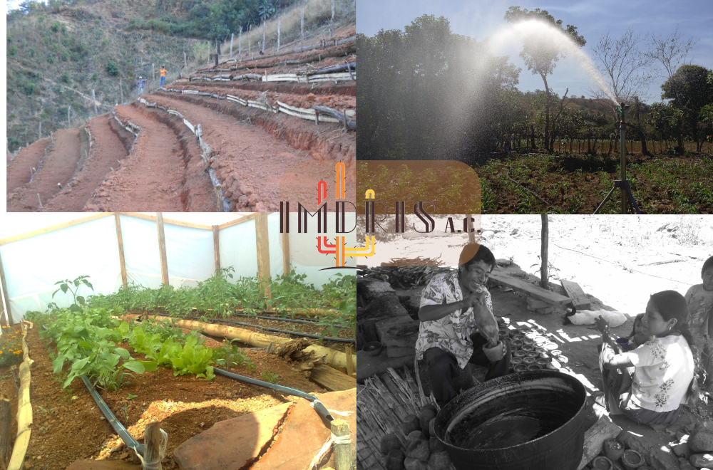

Seguridad Alimentaria
De acuerdo con datos de la FAO, la producción de alimentos actual es basta para la disposición humana, sin embargo, casi 690 millones de personas siguen padeciendo subalimentación crónica, principalmente en países y sectores de la población con ingresos menores a la línea del bienestar.
Mientras tanto, la malnutrición está cobrándose un elevado precio en los países en desarrollo y desarrollados, la obesidad y el sobre peso, son detonantes de enfermedades que afectan gravemente la salud pública y la calidad de vida de las personas y sus comunidades.
Aunado a ello, la desigualdad, la escasa inclusión, la degradación del suelo y procesos ecológicos, así como los efectos relacionados con el cambio global, hacen de la inseguridad alimentaria un problema de importancia mundial.

Diversos estudios indican que en la medida en que cuente con una estabilidad en cuanto a los aspectos básicos para el desarrollo humano, acceso al agua, acceso a los alimentos, vivienda, vestido, calzado, entre otros, se dispondrán de mejores condiciones para el desarrollo comunitario y, por ende, un entorno más seguro, reconfortante, armónico y resiliente.
Es por lo que la inseguridad alimentaria representa en sí, uno de los principales problemas que aquejan a la humanidad al grado de figurar en el numeral dos de los 17 Objetivos para el Desarrollo Sostenible. Hambre cero dicta el segundo Objetivo de la agenda 2030, no obstante, podríamos considerar que la consecución de la seguridad alimentaria es fundamental y transversal dentro de las aristas que comprende el desarrollo humano.
La estrategia de intervención de IMDRIS A.C. parte del trabajo familiar y comunitario, emprendemos acciones de información, sensibilización, diseño, investigación, puesta en marcha y acompañamiento de acciones para la consecución de la seguridad alimentaria a través de medios y recursos y procesos alimentarios locales:
- Identificación y valoración local de alimentos.
- La producción de alimentos como una tarea familiar.
- El rol de la familia en la seguridad alimentaria.
- Balance alimentario a nivel familiar y regional.
- Nutrición: entender cómo funciona nuestro cuerpo con relación a los recursos locales.
- Aspectos técnicos para la producción de alimentos; autoconsumo y mercados locales.
- Mercados locales y regionales; integrar corredores alimentarios.
- Las técnicas de producción de alimentos con relación a los procesos ecológicos.
- Inclusión y equidad en la distribución de alimentos.
- Participación ciudadana en la gestión alimentaria
- Agroecología para la producción de alimentos
- La resiliencia en los procesos alimentarios
- Redes de ayuda para la seguridad alimentaria